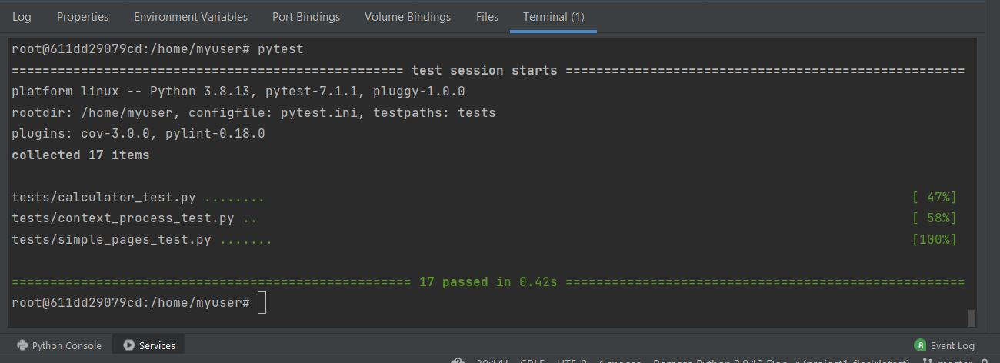
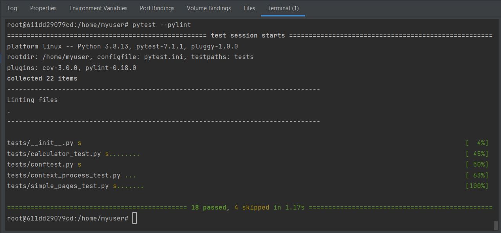

The AAA (Arrange-Act-Assert) pattern has become almost a standard across the industry. It suggests that you should divide your test method into three sections: arrange, act and assert. Each one of them only responsible for the part in which they are named after. The AAA pattern is used to write unit tests and ensures that the tester writes a good test.
Does the test require any objects or special settings (e.g. variables) Does it need to prep a database Does it need to log in to a webapp Endpoint URL (base URL & query parameters).
Call on a function/method (call a function using a variable and store the return value in a variable) Call on a REST API Interacting with a web page.
Should elicit some sort of response that determines if the test passes or fails
 For this project, I used testing in two ways: pytest and pylint testing. After seeing that my code ran on localhost, I wanted to get it to run in the heroku production version. In order to do this, I had to ensure that pytest ran successfully. When I ran pytest for the first time, I saw I had several failures. Pytest tested tests/calculator_test.py, tests/context_process_test.py, and tests/simple_pages_test.py. Because of this, I did not get a green checkmark for runtest in prod.yml under GitHub actions. After going back and fixing those errors, my production site was able to run smoothly on heroku. I then ran "pytest --pylint" in the terminal and saw I had some spacing and illogical errors as well. After fixing these, I ran the command again and saw that 18 passed and 4 skipped.
When coding, testing is very important. In this project, I used pytest and pylint testing. Pytest checks if your tests run and work as they should, while pylint tests check whether the code is written to the worldwide standard of python. Pylint tests check your grammar and checks for common security problems as well as any illogical issues. Pep8 standard defines how you name your functions, how you put your comments in, how you name your classes, and essentially the grammar of python.